Reproducing the Singularity Regression Kriging (SRK) Model
A complete walkthrough of the SRK model — which measures how a
covariate's local intensity scales with neighbourhood size, feeds that
singularity index to a random forest as an extra predictor, and kriges what
the forest leaves behind — from raw geochemical samples to manuscript. The method
is implemented here in a single self-contained R file, reproduced on the paper's
own simulation and on its 998 cobalt samples from Western Australia, and
stress-tested with an error bar the published comparison does not carry.
R/ pipeline scripts including the complete method in
R/02-srk-core.R · config/project-config.R ·
results/ and tables/ (every number quoted on this page) ·
tests/ · run-all.R — unzip and run
Rscript run-all.R from the SRK/ folder root. The
case-study sample table is downloaded by the pipeline, not bundled; see
§2.4.
To cite the SRK model in publications, please use:
Ren K, Song Y*, Chen M, Yu Q (2026). A singularity regression
kriging for spatial prediction. GIScience & Remote Sensing 63(1):2690341.
doi ·
PDFCC BY
· authors' code
Published reference · SRK Fig. 9
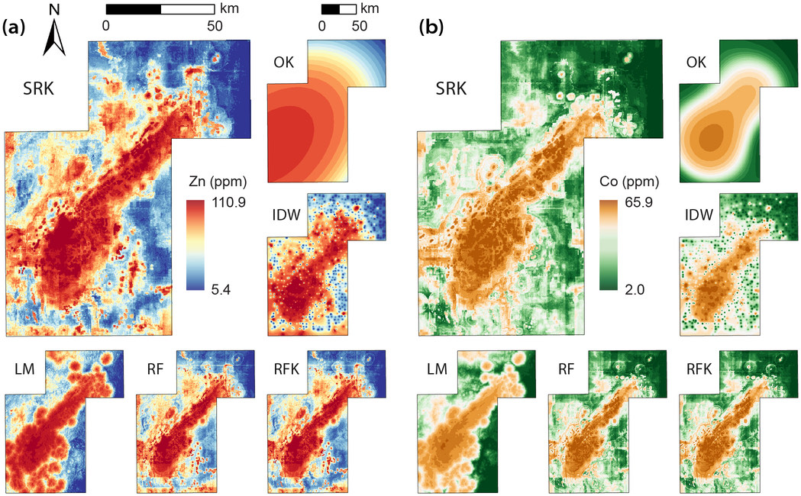
SRK paper Fig. 9 — what the method is ultimately for: full-grid
predictions of Zn (a) and Co (b) from SRK and its five benchmarks, on a shared colour
scale per element. Ordinary kriging and IDW give smooth blobs around the sample
clusters, the linear model gives a lithology-shaped map with no local detail, and the
three forest models resolve the mineralised belt. This tutorial reproduces the
cross-validated accuracy behind that comparison for cobalt; the full-grid maps
themselves are out of scope, and are shown here from the article
(§3.3). Click to enlarge.
1 Method Overview & Reproduction Scope
1.1 Core Idea
Regression kriging splits a spatial variable into a deterministic trend and a
spatially correlated residual, predicts the trend from covariates, and kriges the
rest. The weak link is the trend model. Ordinary kriging (OK) assumes there is no
trend at all — a constant mean — and regression kriging usually assumes a linear
one. Both leave nonlinear, multiscale structure sitting in the residual, where a
variogram fitted under an assumption of stationarity cannot represent it.
Ren et al. (2026) change exactly one thing: what the trend model is allowed to
see. Alongside each environmental covariate Xk they compute its
singularity index αk(s) — the exponent describing how
the local intensity of that covariate scales as the measuring window grows. A value
of 2 means the field is locally uniform; below 2 means local enrichment; above 2
means depletion. The random forest is then trained on the covariates and their
singularity indices, and ordinary kriging is applied to what the forest still cannot
explain.
Research problem: in heterogeneous terrain the response is nonlinear,
multiscale and non-Gaussian, so a kriging model with a simple trend degrades
exactly where the interesting anomalies are.
One-line contribution: SRK builds anomaly descriptors from the
covariates at a ladder of spatial scales, hands them to the trend model,
and leaves the residual closer to stationary — which is what the kriging step
assumes in the first place.
Why the covariate, not the response, matters: a singularity index built
from the response could only be evaluated where the response is known — that is,
never at a prediction location, and never inside a held-out block. Building it
from covariates is what lets the feature survive spatial block cross-validation
instead of leaking through it.
What it buys: on the paper's simulation, reproduced below, SRK lifts
R2 from 0.876 to 0.972 on a near-normal field, and from 0.736 to
0.940 on a long-tailed one — the margin widens as the distribution departs from
Gaussian. On the real cobalt data it lifts R2 from 0.15 (ordinary
kriging) to 0.36 under spatial blocking, and stays ahead of the strongest
machine-learning benchmark on every one of 20 random-forest seeds
(§3.2 Step 5).
Published reference · SRK Fig. 4
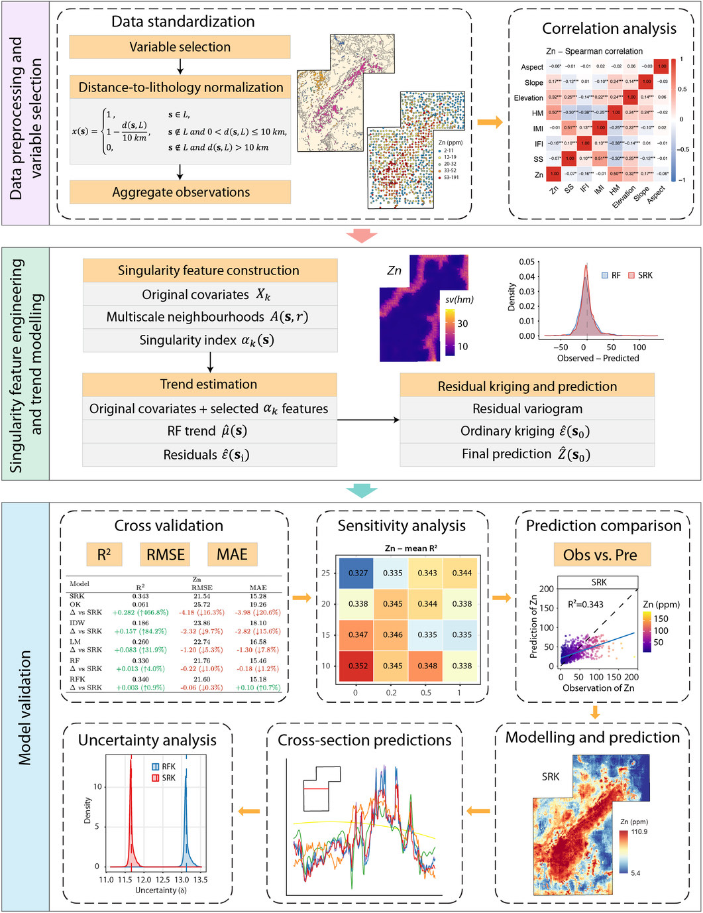
SRK paper Fig. 4 — the whole model in one picture, and the plan of
§3 of this page: preprocess and screen the covariates, build multiscale singularity
features from them, fit the random forest trend, krige the residuals, and validate
with spatial blocks. Click to enlarge.Published reference · SRK Fig. 3
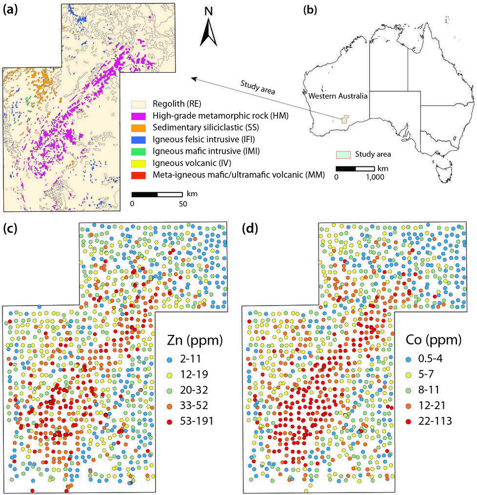
SRK paper Fig. 3 — the published study area: a mineralised region of
Western Australia (b) with its lithological units (a) and the clustered Zn (c) and
Co (d) sample sets. This tutorial uses the 998 Co samples of panel (d); the
lithology polygons reach it already reduced to the proximity variables of
Eq. 14.
◆Reader anchor
One covariate, measured in windows of growing size, gives one number per
location: the slope of log intensity against log scale, plus two. That number is
a new column. The forest gets it, the residual gets smaller, the kriging step
gets an easier job. Everything on this page serves that line.
✓What you need
R 4.1+ and the folder from the download button. The method itself is
R/02-srk-core.R, about 250 lines that depend on four packages:
ranger for the forest, automap and gstat for
the variogram and kriging, sp for coordinate handling. The singularity
indices, the variance filter, the spatial block folds and the accuracy metrics are
base R. The full pipeline runs in about two and a half minutes, most of it in the
two robustness steps.
1.2 Method Logic (Eq. 1–13)
SRK chains three standard tools in a specific order. Each link is simple; the model
is what the middle one is given to work with.
Local intensitymean |Xk| inside a square
window of half-width r, at every scale (Eq. 1–2)
→
Singularity indexαk = slope of
log C on log r, plus 2 (Eq. 3–4)
→
Feature filterdrop α columns with training SD below
0.5 (Sec. 2.2.1)
→
Forest trendRF on covariates + surviving α columns
(Eq. 5–7)
→
Residual krigingOK on ε, added back to the trend
(Eq. 8–10)
Key concepts and equations
Local covariate intensity (Eq. 2). At location s and scale
r, take the mean absolute covariate value over every reference point inside
the square window A(s, r):
A scale carrying fewer than three reference points is discarded, not guessed at.
The scaling law and the index (Eq. 1, 3–4). Across scales
r1 < … < rJ the
theoretical relation C ∝ rα−2
becomes a straight line in logarithms, and α is its slope plus two:
α = 2 is a spatially uniform field, α < 2 is local
enrichment, α > 2 is local depletion. Locations with fewer than
two usable scales are set to the neutral 2.
The augmented feature set (Eq. 5). The q singularity columns
that survive the SD filter join the p original covariates:
The kriging standard error δ is the model's uncertainty measure.
Accuracy (Eq. 11–13).R2, RMSE and MAE on the
held-out validation data, never on the training fit.
◇Where the window is, and what is in it
The window is a square of half-width r — the Chebyshev ball, not a
disc — and the reference points inside it are the sample locations, not a
raster. So C(A(s, r)) is a mean over however many
observations of the covariate happen to fall within r in both easting and
northing. That is why the sampling design shows through in the index, and why a
minimum count per scale is part of the definition rather than an implementation
detail.
1.3 Reproduction Scope
This pipeline reproduces the paper's simulation experiment and its
case study up to spatial block cross-validation. The article maps two trace
elements; this tutorial follows cobalt end to end, because every step is written
as a loop over the ELEMENTS list and one element is enough to show each
step working — putting zinc back is a single config entry
(§2.3). Everything tagged Demo run regenerates
from the folder behind the download button; everything tagged Published reference
is a static image from the article. The published prediction maps, cross-sections and
uncertainty maps need the 97,234-cell 500 m prediction grid, which is out of scope
here; §3.3 shows those figures from the article and says what
it would take to regenerate them.
Item
This pipeline
Published article
Simulation
Same 20 × 20 grid, same spherical fields, same seed 42,
same 70/30 split — Table 1 reproduced to three decimals
Sec. 2.3, Table 1, Figs. 1–2
Case-study samples
The authors' released table: 998 Co samples with four lithology proximity
variables and three terrain variables, downloaded by
R/20-case-data.R
Zn (n = 1,105) and Co (n = 998) from GSWA geochemistry
(DMIRS-047) with Geoscience Australia lithology and DEM, Sec. 3.1
Covariate screening
Spearman screen re-run from the data; it returns the published covariate
set
Sec. 4.2, Fig. 5
Singularity features
2–20 km at 2 km steps, ≥ 3 neighbours per scale,
≥ 2 valid scales, SD > 0.5 filter
Sec. 3.2.2, Sec. 4.3, Fig. 6
Validation
5-fold spatial block CV, 15 km blocks, six models — the Co half of
Table 2 reproduced, with the deterministic rows exact
Sec. 3.2.3, Table 2, Fig. 8
Sensitivity
Maximum scale × SD threshold grid, 30 cells
Sec. 4.4, Fig. 7
Seed stability
Added here. The same cross-validation repeated over 20 random
forest seeds, because the released scripts fix none
not in the article
Full-grid prediction
out of scope — needs the 8.1 MB, 97,234-cell grid
Figs. 9–11
1.4 Which Implementation This Page Follows
Two bodies of R code carry the SRK name, and they are not the same thing.
The authors' scripts
CRAN SingRegKrig 0.1.0
Written by
Ren, Song, Chen and Yu — the paper's authors
(GitHub,
Figshare)
Tyagi, Pandey, Singh and Tripathi — an independent third-party
implementation that cites the paper; none of the paper's authors is
an author of the package
Engine
ranger + automap::autoKrige, with a hand-written
singularity.R
randomForest + gstat, with its own
compute_singularity()
Reproduces the article's numbers
Yes — this page does it below
No. Its bundled sim_srk_data() is a different generator, and
on it SRK does not reach the article's Table 1
!If you reach for the CRAN package, check sd_threshold first
srk() defaults to sd_threshold = 0.5, the value the
article uses for lithology proximity variables whose singularity indices have
SD of 6 or more. On the package's own simulated data the single singularity feature
has SD = 0.29, so the default discards it: retained_features
comes back as character(0) and the fitted model is random-forest
kriging with no singularity term at all. The filter is doing what it was designed to
do; the default is simply calibrated to a different kind of covariate. Inspect
fit$retained_features before reporting anything as an SRK result.
This page follows the authors' scripts. R/02-srk-core.R is a port of
them into the step-numbered layout the rest of this tutorial series uses, and every
place it departs from them is marked DEPARTURE in the source and listed in
§2.2.
2 Setup, Code & Data
2.1 Environment & Dependencies
Four packages, all on CRAN. Nothing else is needed: the singularity indices, the
variance filter, the spatial block folds, the accuracy metrics and every figure are
base R.
autoKrige — automatic variogram family choice and ordinary kriging, exactly as the paper specifies
srk_krige_residuals(), bench_ok()
gstat
unconditional Gaussian simulation of the two base fields; the IDW benchmark
R/10-simulate.R, bench_idw()
sp
coordinate promotion for the two above
throughout
Verified on R 4.6.0. Runtimes and the one known version sensitivity
are in env/requirements.md.
2.2 The Method in One File
R/02-srk-core.R holds the whole model. Three functions carry
Eq. 1–10; everything else in the file is the five benchmarks, the metrics and the
block folds, which exist so the cross-validation loop can treat all six models
identically.
Eq. 2 — local intensity at every scale, in one pass
The authors' singularity_safe() loops over evaluation points and scales.
The port keeps the definition and vectorises the search: one Chebyshev distance matrix
per chunk of evaluation points, then one logical mask per scale. That is what makes the
sensitivity analysis in step 6 affordable — the intensity matrix is computed once
and re-cut for every shorter scale ladder.
R/02-srk-core.R
srk_intensity <- function(x_ref, y_ref, z_ref, x_eval, y_eval, scales,
min_pts_per_scale = 3L, use_abs = TRUE,
chunk = 2000L) {
if (use_abs) z_ref <- abs(z_ref)
n_eval <- length(x_eval)
J <- length(scales)
C <- matrix(NA_real_, n_eval, J)
# Chunked so a large evaluation set never allocates one huge distance matrix.
for (ii in split(seq_len(n_eval), ceiling(seq_len(n_eval) / chunk))) {
d <- pmax(abs(outer(x_eval[ii], x_ref, "-")),
abs(outer(y_eval[ii], y_ref, "-"))) # square window = Chebyshev ball
for (j in seq_len(J)) {
inw <- d <= scales[j]
cnt <- rowSums(inw)
val <- as.numeric(inw %*% z_ref) / cnt
val[cnt < min_pts_per_scale] <- NA_real_ # too few neighbours: no estimate
C[ii, j] <- val
}
}
C
}
Eq. 3–4 — the index is a slope plus two
R/02-srk-core.R
srk_alpha <- function(C, scales, min_valid_scales = 2L, eps = 1e-9) {
logr <- log(scales)
vapply(seq_len(nrow(C)), function(i) {
cr <- C[i, ]
ok <- is.finite(cr)
if (sum(ok) < min_valid_scales) return(NA_real_) # caller substitutes 2
yv <- log(ifelse(cr[ok] > 0, cr[ok], eps)) # a window of zeros is possible
xv <- logr[ok]
xd <- xv - mean(xv)
sum(xd * (yv - mean(yv))) / sum(xd * xd) + 2
}, numeric(1))
}
tests/test-01 transcribes the authors' loop verbatim and checks that
these two functions return the same numbers to 1e−10, including which locations
come back as NA.
Eq. 5–9 — the model
srk_run() is the whole method: build or look up the singularity columns,
drop the flat ones, fit the forest, krige what is left, add the two together. It shares
its argument list with the five benchmarks, so SRK_MODELS can be iterated
over.
R/02-srk-core.R (abridged)
srk_run <- function(train, test, yvar, xvars, sv = NULL, ...) {
## Step 1 — one singularity column per covariate (Eq. 1-4).
## Covariates are observable at prediction locations, so the union of train
## and test may supply the reference values without leaking the response.
...
for (cc in sv_cols) {
tr[[cc]][!is.finite(tr[[cc]])] <- neutral # 2 = uniform field
te[[cc]][!is.finite(te[[cc]])] <- neutral
}
## Step 2 — variance filter, then the forest (Eq. 5-7).
sv_keep <- srk_select_features(tr, sv_cols, sd_threshold)
tri <- srk_trend(tr, te, yvar, c(xvars, sv_keep), ntree = ntree,
seed = seed, use_coords = use_coords)
tr$resid <- tr[[yvar]] - tri$trend_tr
## Step 3 — ordinary kriging of the residual, added back (Eq. 8-9).
kr <- srk_krige_residuals(tr, te, "resid", fitter = fitter)
list(model = "SRK", pred = tri$trend_te + kr$pred, trend = tri$trend_te,
kriged = kr$pred, se = kr$se, sv_kept = sv_keep, ...)
}
SRK_MODELS <- list(OK = bench_ok, IDW = bench_idw, LM = bench_lm,
RF = bench_rf, RFK = bench_rfk, SRK = srk_run)
!Two departures from the released scripts, both switchable
The forest gets a seed. The authors call ranger() without
one, so RF, RFK and SRK move between runs — which is why their released
cv_summary_Co.csv and the article's Table 2 rank the models
differently, and why step 5 of this pipeline exists. RF_SEED in the config fixes it;
set it to NULL to restore the original behaviour.
Coordinates in the trend model. The authors' case-study code fits
ranger(reformulate(c("x", "y", xvars), yvar)) — the forest sees the
coordinates. The paper's Eq. 5 defines F(s) without them. The
default RF_USE_COORDS = TRUE reproduces the code, which is what
produced the published numbers; set it to FALSE to follow the
equation. Their simulation code omits the coordinates, and so does step 1
here.
Everything else — the window shape, the minimum counts, the neutral value, the
0.5 filter, autoKrige, 500 trees, the block construction — matches the
released scripts. tests/test-02 proves the folds are identical by
reproducing the authors' own fold-level IDW and LM numbers to 1e−6.
2.3 Project Structure & Configuration
folder
SRK/
├── run-all.R # one command runs everything
├── config/project-config.R # the only file you edit to port this elsewhere
├── R/
│ ├── 00-config.R # paths, output file names
│ ├── 01-helpers.R # logging, IO, figure devices
│ ├── 02-srk-core.R # THE METHOD + the five benchmarks
│ ├── 10-simulate.R # paper Sec. 2.3 -> Table 1, Figs. 1-2
│ ├── 20-case-data.R # download, tidy, Spearman screen (Sec. 4.1-4.2)
│ ├── 30-singularity.R # covariate singularity features (Sec. 4.3)
│ ├── 40-block-cv.R # six models, 5-fold spatial block CV (Table 2)
│ ├── 50-seed-stability.R # how much of the SRK-RFK gap is forest noise
│ ├── 60-sensitivity.R # scale x threshold grid (Fig. 7)
│ ├── 90-tables.R # LaTeX tables
│ └── p01..p06-*.R # figures
├── data/ # provenance.md; the CSV lands here on first run
├── results/ # every number quoted on this page
├── tables/ # the same numbers as LaTeX
├── figs/ # png + pdf of every figure
├── env/ # requirements.md, session-info.txt, runtimes.csv
└── tests/ # 18 method-property + 29 reproduction checks
Porting SRK to another study area means editing one file. The block below is the
part of config/project-config.R that carries the method's parameters;
everything on this page is a function of these values.
config/project-config.R
# One entry per response variable. `xvars` is the covariate set the paper's
# Spearman screen (p < 0.05) retained; R/20-case-data.R re-runs the screen and
# reports whether it reproduces this set.
#
# The paper maps two trace elements; this tutorial follows Co end to end. Every
# step is a loop over ELEMENTS, so adding the second element back is one entry --
# uncomment the Zn block and re-run:
#
# Zn = list(file = "dt_Zn_linear.csv", yvar = "Zn", unit = "ppm",
# xvars = c("ss", "ifi", "hm", "elevation", "slope", "aspect")),
ELEMENTS <- list(
Co = list(file = "dt_Co_linear.csv", yvar = "Co", unit = "ppm",
xvars = c("ifi", "hm", "elevation"))
)
# -- Singularity features (paper Eq. 1-4) ------------------------------------
SV_SCALES <- seq(2000, 20000, by = 2000) # window half-widths, map units
MIN_PTS_PER_SCALE <- 3L # a scale needs this many neighbours
MIN_VALID_SCALES <- 2L # an index needs this many valid scales
SV_NEUTRAL <- 2.0 # value assigned when estimation fails
SV_SD_THRESHOLD <- 0.5 # drop sv features flatter than this
# -- Trend model and residual kriging ----------------------------------------
RF_NTREE <- 500L
RF_SEED <- 42L # the authors' scripts leave this unset
RF_USE_COORDS <- TRUE # their case-study code feeds x, y to the forest
VARIOGRAM_FIT <- "automap" # as published
# -- Validation ---------------------------------------------------------------
CV_FOLDS <- 5L
CV_BLOCK_SIZE <- 15000 # spatial block edge, map units
CV_SEED <- 123L
SEED_REPEATS <- 20L # forest seeds used by R/50-seed-stability.R
2.4 Data Contract
SRK needs one table per response: point observations in a projected CRS with one
column per covariate. That is the entire input.
Column
Type
Meaning
x, y
numeric
projected coordinates in metres — the scale ladder and the block size are read in these units
Co
numeric
the response, one representative value per location
ss, ifi, imi, hm
numeric, [0, 1]
lithology proximity: 1 inside the unit, falling linearly to 0 over a 10 km buffer, 0 beyond (Eq. 14)
elevation, slope, aspect
numeric
DEM-derived terrain
The case-study table is not redistributed with this tutorial.
R/20-case-data.R downloads it (about 130 KB) from the authors'
repository on first run and writes data/provenance.md recording where it
came from: GSWA Geochemistry (DMIRS-047) for the concentrations, Geoscience Australia's
Surface Geology and DEM for the covariates. Set DATA_SOURCE <- "local"
and drop your own CSVs in data/ to run everything on your own study area.
!The coordinates are Web Mercator, and that changes what "15 km" means
x and y are EPSG:3857 metres near 122.5°E,
32.5°S. Web Mercator inflates distance by 1/cos(32.5°) = 1.19 at
that latitude, so the published 2–20 km scale ladder is about
1.7–16.9 km on the ground and the 15 km cross-validation block is about
12.6 km. Nothing in the comparison is affected — every model sees the same
distances — but do not quote the ladder as ground distance, and if you port SRK to
a study area of your own, use an equal-area or UTM projection so the two agree.
3 Reproduction Pipeline, Results & Validation
3.1 Pipeline Execution
One command runs the seven steps and the six figure scripts, in order, from a
clean folder. Step 20 fetches the sample table the first time; nothing else
touches the network.
shell
Rscript run-all.R # full pipeline, about 150 s
Rscript run-all.R test # 18 + 24 verification checks, about 8 s
Rscript run-all.R 10 40 # only the named steps
Rscript run-all.R figures # only the figure scripts
== 10 Simulation experiment =============================
base fields: cor(X, Y) = 0.983
normal skew(Y) = -0.60 OK R2 = 0.876 SRK R2 = 0.972
skewed skew(Y) = 0.32 OK R2 = 0.833 SRK R2 = 0.968
long-tail skew(Y) = 2.17 OK R2 = 0.736 SRK R2 = 0.940
R2 vs published Table 1 (this run / paper):
normal OK 0.876 / 0.876
normal SRK 0.972 / 0.972
skewed OK 0.833 / 0.833
skewed SRK 0.968 / 0.966
long-tail OK 0.736 / 0.736
long-tail SRK 0.940 / 0.940
10-simulate took 0.5 s
== 20 Case-study data and covariate screening ===========
downloading dt_Co_linear.csv
Co: 998 samples, 0.5-112.2 ppm
Co: screen keeps ifi, hm, elevation (= the published set)
20-case-data took 0.5 s
== 30 Covariate singularity features ====================
Co: keeps sv_ifi, sv_hm
Co: drops sv_elevation
SD separates the two covariate families cleanly:
lithology proximity SD = 6.18 - 6.77
terrain SD = 0.05 - 0.05
30-singularity took 0.3 s
== 40 Spatial block cross-validation ====================
Co: 998 samples in 120 blocks -> 5 folds (191/190/229/191/197 per fold)
Co: sd(residual) RF = 4.90, SRK = 4.72; kept sv_ifi, sv_hm
Co ranking by R2: SRK 0.359 RFK 0.340 RF 0.337 IDW 0.266 LM 0.237 OK 0.152
40-block-cv took 7.0 s
== 50 Random-forest seed stability ======================
Co: SRK beats RFK on R2 in 20 of 20 seeds (mean dR2 = +0.0179, range +0.0103 to +0.0244)
Co: seed-to-seed sd of R2 is 0.0030 (SRK), the published SRK-RFK gap is 0.008
50-seed-stability took 85.2 s
== 60 Parameter sensitivity =============================
Co: best R2 0.365 at 12 km / SD 0.3; baseline 0.359
Co: 30 of 30 cells stay within +/-5% of the baseline on both metrics
60-sensitivity took 56.0 s
==================================================================
Finished in 150.4 s
Outputs: results/ tables/ figs/ data/
3.2 Core Analytical Steps
Step 1 · R/10-simulate.R · 0.5 s
Three distributions, one covariate, and where SRK's margin comes from
The paper's simulation is a controlled test of one claim: SRK's advantage over
ordinary kriging should grow as the response departs from Gaussian. A spherical
field on a 20 × 20 grid is the response; a second field, mixed
85/15 with the first, is the covariate; both are then pushed through a cube and an
exponential to make a skewed and a long-tailed version. Seed 42, a 70/30 split, and
the two models are scored on the held-out 120 cells.
R/10-simulate.R
set.seed(SEED) # 42, as in the released script
xy <- expand.grid(x = seq_len(SIM_SIDE), y = seq_len(SIM_SIDE))
sp::gridded(xy) <- ~x + y
sim_field <- function(range) {
g <- gstat::gstat(formula = z ~ 1, dummy = TRUE, beta = 0,
model = gstat::vgm(psill = 1, model = "Sph", range = range),
nmax = 20)
stats::predict(g, newdata = xy, nsim = 1)@data$sim1
}
y_raw <- sim_field(SIM_RANGE_Y) # range 10
noise_raw <- sim_field(SIM_RANGE_X) # range 8
x_raw <- SIM_MIX * y_raw + (1 - SIM_MIX) * noise_raw # cor(X, Y) = 0.98
y_base <- y_raw + SIM_SHIFT # keep the transforms positive
x_base <- x_raw + SIM_SHIFT
scenarios <- list(
normal = list(Y = y_base, X = x_base),
skewed = list(Y = y_base^3 / 100, X = x_base^3 / 100),
`long-tail` = list(Y = exp(y_base) / 1000, X = exp(x_base) / 1000))
The scales here are grid cells, not metres — SV_SCALES_SIM is
1 … 10 — and the SD filter is switched off, because a single covariate
cannot be compared against anything. That matches the authors' simulation code,
which keeps its one singularity column unconditionally.
Demo run
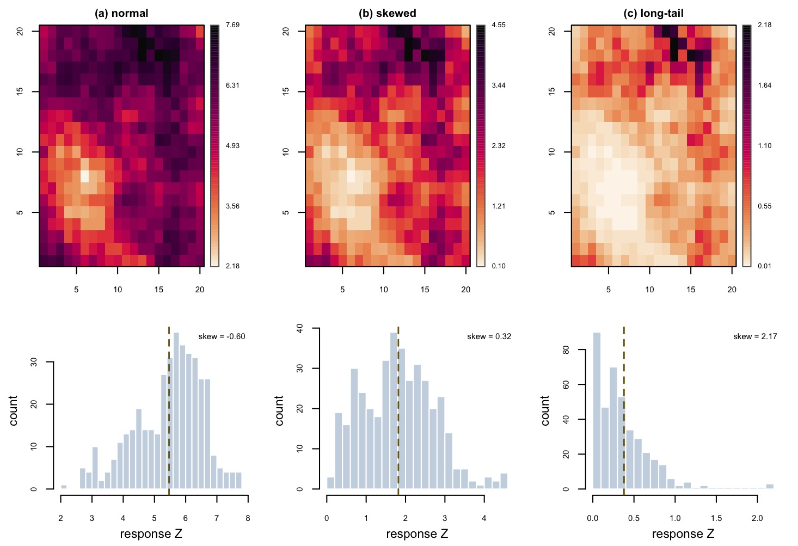
Demo Fig. 1 — the same three fields the paper simulates:
near-normal (skew −0.60), skewed (+0.32) and long-tailed (+2.17). The
spatial pattern is identical across the three; only the transform changes.Published reference · SRK Fig. 1
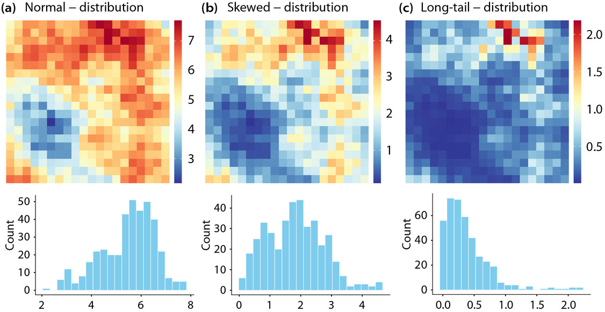
SRK paper Fig. 1 — the published version of the same three
panels. Same generator, same seed: the maps and the histogram shapes match
panel for panel.
Demo run
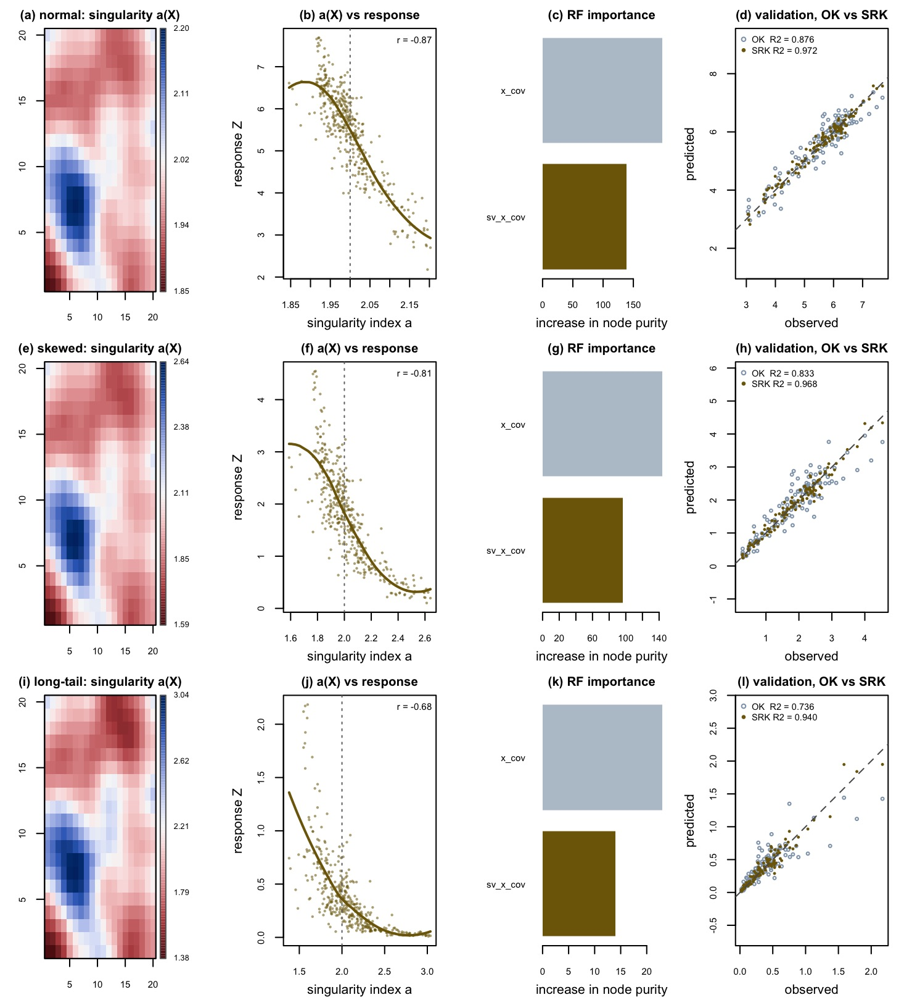
Demo Fig. 2 — the mechanism, one row per scenario: where the
covariate is singular (a, e, i), how strongly α tracks the
response (b, f, j: r = −0.87, −0.81, −0.68),
how the forest splits its attention between the covariate and its singularity
index (c, g, k), and the validation scatter where SRK closes on the
1:1 line that OK misses (d, h, l).Published reference · SRK Fig. 2
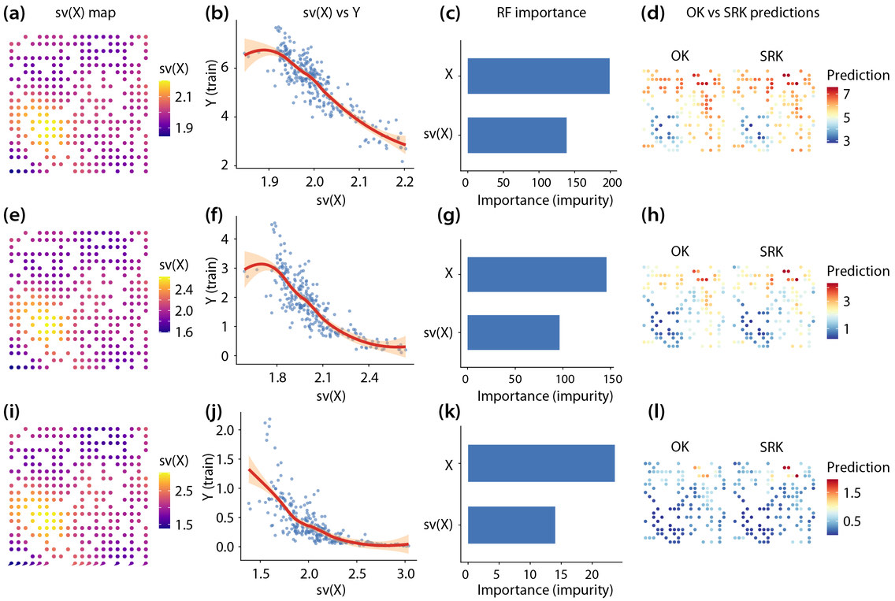
SRK paper Fig. 2 — the same four-panel argument in the
article's layout. The article's point about panels (c, g, k) — that
the singularity feature's relative importance rises with skewness — is visible
in both.
Simulated field
R2
RMSE
MAE
OK
SRK
paper SRK
OK
SRK
paper SRK
OK
SRK
paper SRK
Normal
0.876
0.972
0.972
0.361
0.171
0.172
0.283
0.137
0.137
Skewed
0.833
0.968
0.966
0.361
0.158
0.162
0.265
0.117
0.120
Long-tail
0.736
0.940
0.940
0.178
0.085
0.085
0.107
0.056
0.056
results/simulation-vs-paper.csv — the paper's
Table 1, reproduced. The three OK rows match the published values to every
printed digit. Two of the three SRK rows do too; the skewed row lands 0.002 high
in R2, which is the random forest's seed, not a difference in
method — see step 5.
◆What this step establishes
The gain over ordinary kriging is 0.096 in R2 on the
near-normal field, 0.135 on the skewed one and 0.205 on the long-tailed one —
monotonically increasing, which is the paper's central simulation claim and is
asserted as a test in tests/test-02. Note also what the
simulation does not establish: the covariate here correlates 0.98 with
the response. Real covariates do not, and the case study below is where the
margin gets realistic.
Step 2 · R/20-case-data.R · 0.5 s
Screen the covariates against the response
The lithology polygons have already been reduced to proximity variables by
Eq. 14 — 1 inside the unit, falling linearly to 0 across a 10 km buffer.
What remains is the paper's Sec. 3.2.1 screen: keep only covariates with a
significant monotonic relation to the element.
results/covariate-screening.csv — the screen returns
exactly the covariate set the paper reports for cobalt: IFI, HM and
elevation, with the other four dropped. This is worth stating in a manuscript:
the published covariate list is not assumed, it falls out of the data. The
separation is wide — the three kept covariates clear p < 1e−7,
the four dropped ones sit above p = 0.3.
Published reference · SRK Fig. 5
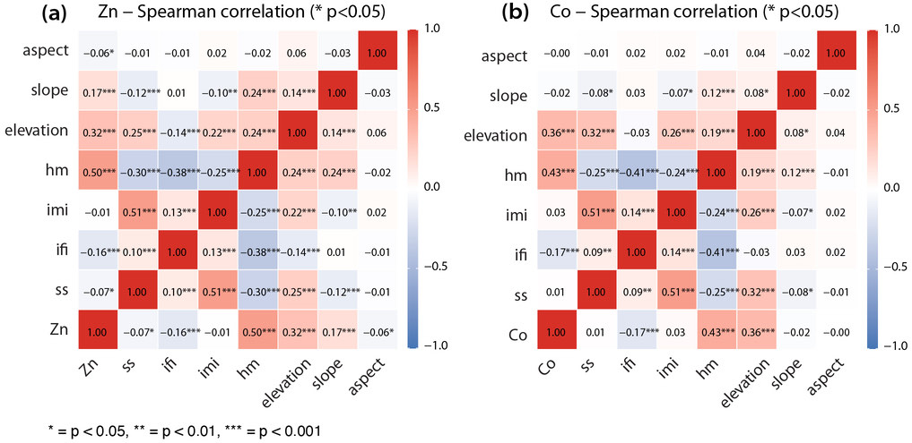
SRK paper Fig. 5 — the full correlation matrices this screen
summarises, for Zn (a) and Co (b). The article reads the same conclusion off
panel (b): Co responds to IFI, HM and elevation and to nothing else.
Element
n
mean
median
max
sd
CV
skewness
Co (ppm)
998
13.30
8.94
112.2
13.21
0.994
2.58
results/response-summary.csv — the sample count matches
the article exactly. The response is strongly right-skewed (2.58) with a
coefficient of variation near 1, which is the condition the simulation says
favours SRK.
Step 3 · R/30-singularity.R · 0.3 s
Build the singularity features, then throw one away
For each retained covariate, the intensity is measured in ten square windows of
half-width 2 km to 20 km, and α is the slope of log intensity on log
scale plus two. The reference points are the sample locations; the evaluation points
are the same locations here, but the same call would evaluate the index on a
prediction grid without changing anything.
R/30-singularity.R
for (xv in cfg$xvars) {
C <- srk_intensity(d$x, d$y, d[[xv]], d$x, d$y, SV_SCALES,
min_pts_per_scale = MIN_PTS_PER_SCALE) # Eq. 2
a <- srk_alpha(C, SV_SCALES, min_valid_scales = MIN_VALID_SCALES) # Eq. 3-4
a[!is.finite(a)] <- SV_NEUTRAL # uniform field
Cs[[xv]] <- C # cached: step 60 re-cuts the ladder from this
sv[[paste0("sv_", xv)]] <- a
}
Feature
mean α
SD
range
% α < 2
r with Co
SD filter
sv(ifi)
7.02
6.77
0.77 – 21.97
28.1
+0.219
retained
sv(hm)
5.43
6.18
1.08 – 21.95
43.6
−0.227
retained
sv(elevation)
2.00
0.046
1.86 – 2.16
44.0
−0.172
dropped
results/singularity-diagnostics.csv — the SD filter is
not a close call. The two lithology proximity variables produce indices with SD
6.18 and 6.77; elevation produces 0.046. More than two orders of magnitude
separate them, and the published 0.5 threshold sits in the empty space between.
No location needed the neutral fallback: every one of the 998 samples had at
least two usable scales.
◆Why terrain has no singularity to speak of
Elevation is smooth at 2–20 km. Its mean absolute value barely
changes as the window grows, so the log-log slope is almost zero and α
sits on 2 — the definition's own value for a uniform field. Lithology proximity
is the opposite: it is 1 inside a unit and 0 more than 10 km outside, so
the window mean changes sharply with scale and α ranges over an order of
magnitude. The SD filter is really a smoothness detector, and the paper's 0.5
is doing exactly the job its Sec. 2.2.1 describes. (In the article's Zn
model, where slope and aspect are also covariates, they behave the same way and
are dropped for the same reason — SD 0.32 and 0.21.)
Demo run
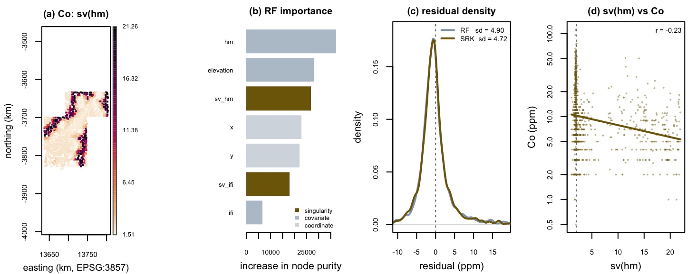
Demo Fig. 3 — sv(hm) in space (a), the forest's ranking of it
(b), the residual it leaves against a plain forest (c), and its relation to the
observed concentration (d). sv(hm) is the third most important feature of seven,
ahead of both coordinates.Published reference · SRK Fig. 6
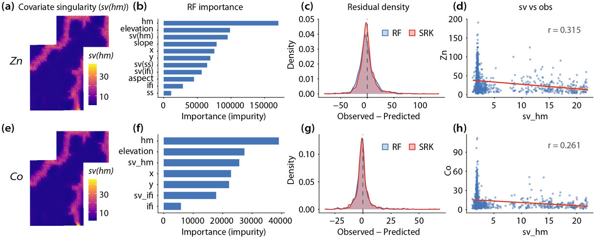
SRK paper Fig. 6 — the article's version, Zn in (a–d) and Co in
(e–h). Its panel (e) maps sv(hm) over the full 500 m grid rather than at
the sample points, which is why it looks continuous; panel (f) puts sv(hm) in
the same position in the importance ranking that the demo run finds.
Feature importance is worth quoting directly, because it is the clearest evidence
that the singularity columns earn their place. Fitting SRK on all 998 Co samples
gives, in order: hm (23 % of total importance),
elevation (17 %), sv_hm (17 %),
x (14 %), y (14 %),
sv_ifi (11 %), ifi (4 %). Both
singularity columns outrank the raw ifi variable they were built from,
and together they carry more of the forest than the two coordinates do.
Step 4 · R/40-block-cv.R · 7 s
Six models, five spatial blocks, no leakage
The samples cluster heavily, so a random split would leave almost every test
point ringed by its own training neighbours and would flatter every kriging-based
model. The paper instead cuts the study area into 15 km squares, shuffles the
squares and deals them round-robin to five folds: 120 blocks, 5 folds, whole blocks
held out together.
fold <- srk_block_folds(d, CV_FOLDS, CV_BLOCK_SIZE, CV_SEED)
for (k in seq_len(CV_FOLDS)) {
tr <- d[fold != k, ]; te <- d[fold == k, ]
for (mname in names(SRK_MODELS)) { # OK IDW LM RF RFK SRK
out <- SRK_MODELS[[mname]](tr, te, yvar, cfg$xvars, sv = sv)
met <- srk_metrics(te[[yvar]], out$pred) # Eq. 11-13
...
}
}
Model
This run
Published Table 2
R2
RMSE
MAE
R2
RMSE
MAE
SRK
0.359
10.39
6.42
0.353
10.45
6.47
RFK
0.340
10.53
6.45
0.345
10.48
6.41
RF
0.337
10.55
6.51
0.342
10.50
6.46
IDW
0.266
11.15
7.42
0.266
11.15
7.42
LM
0.237
11.33
7.48
0.237
11.33
7.48
OK
0.152
12.02
7.99
0.148
12.04
8.03
results/cv-summary.csv — the cobalt half of the paper's
Table 2, reproduced. IDW and LM, the two models that involve neither kriging
nor a forest, land on the published values to every printed digit — and on the
authors' own fold-level output to six decimals. Ordinary kriging is 0.004 high in
R2 because autoKrige picks a different variogram
family on two of the five folds (§3.5). The three
forest models are within the seed spread measured in step 5, and SRK is
first here as it is in the article.
Demo run
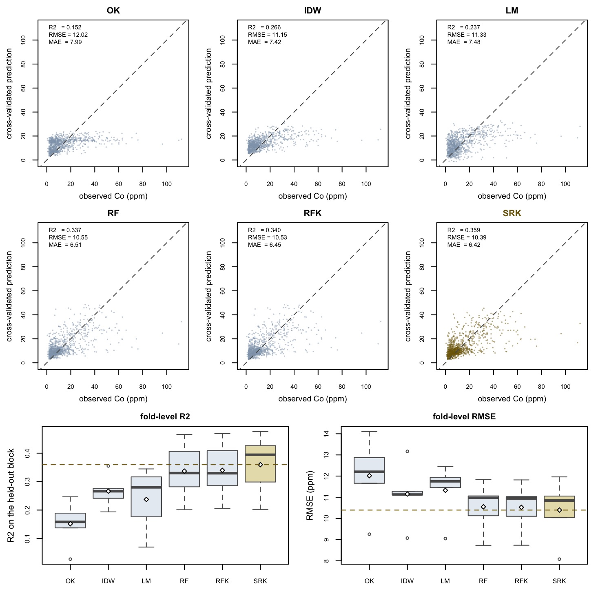
Demo Fig. 4 — the six models on one pair of axes each, and the
five fold-level scores behind every column. The jump from OK to anything with
covariates in it is enormous; the differences among RF, RFK and SRK are small
against the fold-to-fold spread, which is why step 5 pairs them seed by
seed instead of reading them off this table.Published reference · SRK Fig. 8
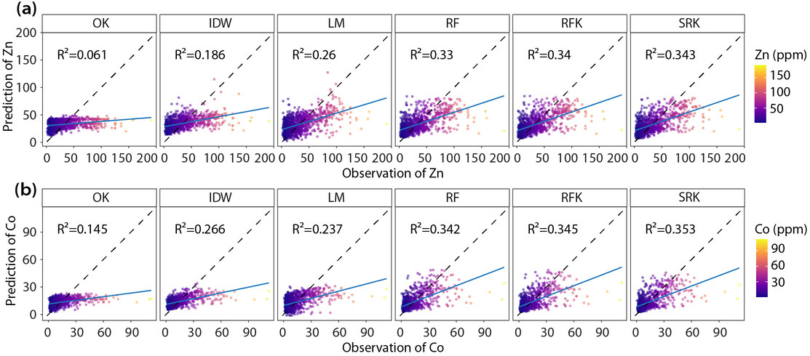
SRK paper Fig. 8 — the article's version of the same six scatters
for both elements. Its reading is the one the demo reproduces: OK is flat and
uninformative, the covariate-based models line up on the 1:1 line, and SRK is at
the front of that group.
◆The result that matters, and the one that needs an error bar
Matters. Ordinary kriging explains 15 % of the cobalt variance
under spatial blocking; adding covariates through a forest takes that to
36 %, and reduces RMSE by 14 % and MAE by 20 %. That is a large,
robust, unambiguous effect, and it is the same conclusion the article draws.
Needs an error bar. SRK against RFK is 0.020 in R2
here, against 0.008 in the article — and the authors' own released
cv_summary_Co.csv has the two the other way round, with RFK ahead
by 0.001. Three artefacts, three answers. A gap that size cannot be read off a
single run of a model containing an unseeded random forest. That is what
step 5 is for.
Step 5 · R/50-seed-stability.R · 85 s · not in the paper
Is the SRK lead real? Put an error bar on it
Three of the six models contain a random forest, and the released scripts call
ranger() without a seed. So RF, RFK and SRK produce a different number
every time the analysis is run — and the differences the article reports between
them are small. There is direct evidence of how small: the authors' own repository
ships cv_summary_Co.csv with SRK at
R2 = 0.344, behind RFK at 0.345, while the
article's Table 2 has SRK first at 0.353. Same code, same data, different run.
This step holds the folds and the data fixed and repeats the entire
cross-validation over 20 forest seeds, then asks a paired question: on how many of
those seeds does SRK actually finish ahead of RFK?
R/50-seed-stability.R
fold <- srk_block_folds(d, CV_FOLDS, CV_BLOCK_SIZE, CV_SEED) # fixed once
for (s in seq_len(SEED_REPEATS)) {
for (mname in c("RF", "RFK", "SRK")) { # the seeded three
fm <- do.call(rbind, lapply(seq_len(CV_FOLDS), function(k) {
out <- SRK_MODELS[[mname]](d[fold != k, ], d[fold == k, ],
yvar, cfg$xvars, sv = sv, seed = s)
srk_metrics(d[[yvar]][fold == k], out$pred)
}))
... # mean over the five blocks, one row per (seed, model)
}
}
Demo run
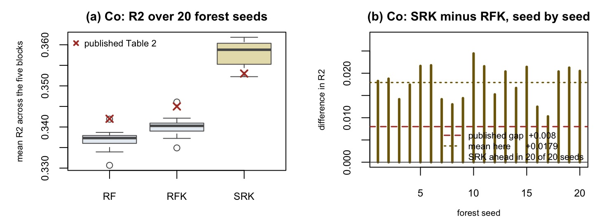
Demo Fig. 5 — left: where 20 forest seeds put each model, with the
published Table 2 values marked (×). Right: the paired
SRK − RFK difference seed by seed, against the gap the article
reports (dashed red). Every bar is positive. Nothing in the article corresponds to
this figure.
Model
mean R2
SD
min
max
published
authors' CSV
SRK
0.3580
0.0030
0.3522
0.3618
0.353
0.344
RFK
0.3401
0.0022
0.3349
0.3461
0.345
0.345
RF
0.3369
0.0022
0.3307
0.3419
0.342
0.342
results/seed-stability-spread.csv — the seed-to-seed SD is
about 0.002–0.003 in R2 for all three models. The published RFK
value falls inside the range; the published RF value sits 0.0003 above the top of
it; the published SRK value is inside. The one number that falls clearly outside
is the authors' released CSV for SRK (0.344), which is lower than any of the
20 seeds here — see the note below.
◆For cobalt, the SRK advantage survives the error bar
SRK finishes ahead of RFK on 20 of 20 seeds, by +0.018 in
R2 on average, with the smallest margin (+0.010) still more
than three times the seed-to-seed SD. That is a stronger result than the article
claims for cobalt (+0.008), and it is the kind of statement a paired design
licenses and a single run does not.
The comparison that never needed an error bar is SRK against the
geostatistical benchmarks: +0.21 in R2 over ordinary kriging is
seventy times the seed noise. Reporting the spread separates the claim that is
bulletproof from the one that had to be earned.
!Not all of the offset is the seed
The authors' released SRK value of 0.344 is about five seed-SDs below the
mean this pipeline produces, so the forest seed alone does not explain it.
SRK's third step is an autoKrige call on the residuals, and the
same automap version difference that shifts ordinary kriging on two
of the five folds (§3.5) shifts SRK too. Both effects
are real, both are small compared with SRK's margin over OK, IDW and LM, and
both are worth naming rather than averaging away.
✓Carry this into your own work
Any comparison between two models that both contain a random forest needs
this. It costs one loop and it changes what you are entitled to write. If the
gap between your method and the nearest benchmark is smaller than the spread
across seeds, report the spread — a reviewer who re-runs your code will find it
anyway.
Step 6 · R/60-sensitivity.R · 56 s
How much do the two parameters matter?
SRK has exactly two tuning choices: how far up the scale ladder the regression
runs, and how flat a singularity feature may be before it is dropped. The paper
varies both and reports that performance stays within roughly ±5 % of the
baseline. This step re-runs the full cross-validation over a 6 × 5
grid of the two — 30 cells, 150 SRK fits.
Truncating the ladder needs no new neighbourhood search. Step 3 cached the
per-scale intensity matrix, so a shorter ladder is a column subset and a re-fitted
slope:
R/60-sensitivity.R
Cs <- readRDS(file.path(DERIVED, sprintf("intensity-%s.rds", elem)))
for (mx in SENS_MAX_SCALES) { # 10, 12, 14, 16, 18, 20 km
keep_scale <- SV_SCALES <= mx
for (xv in cfg$xvars) { # re-fit Eq. 3-4 on the shorter ladder
a <- srk_alpha(Cs[[xv]][, keep_scale, drop = FALSE], SV_SCALES[keep_scale],
min_valid_scales = MIN_VALID_SCALES)
a[!is.finite(a)] <- SV_NEUTRAL
sv[[paste0("sv_", xv)]] <- a
}
for (thr in SENS_THRESHOLDS) { ... } # 0.3, 0.4, 0.5, 0.6, 0.7
}
Demo run
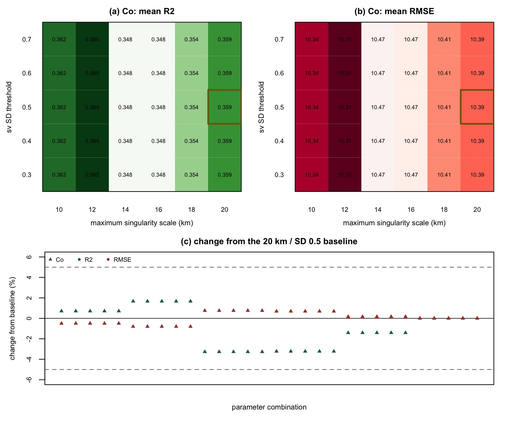
Demo Fig. 6 — mean R2 (a) and RMSE (b) across
the parameter grid, baseline cell outlined, and (c) the change from baseline with
the article's ±5 % band. All 30 cells sit inside the band.Published reference · SRK Fig. 7
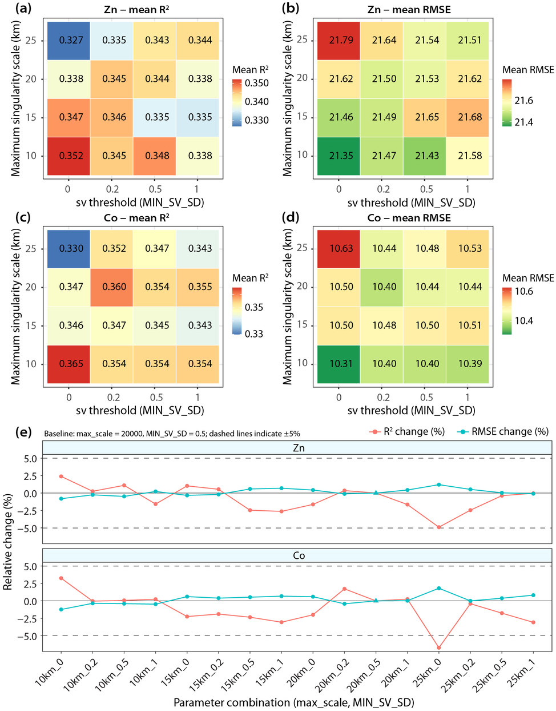
SRK paper Fig. 7 — the same design in the article, for both
elements: heatmaps of mean R2 (a, c) and RMSE (b, d),
and the relative-change panel (e) whose dashed lines are the ±5 %
robustness band.
baseline R2
best
at
ΔR2 range
ΔRMSE range
cells within ±5 %
0.359
0.365
12 km / any threshold
−3.3 % to +1.7 %
−0.8 % to +0.8 %
30 / 30
results/sensitivity.csv — the article's robustness claim
reproduces: every combination stays inside ±5 % of the baseline on both
metrics, and RMSE moves by less than one percent across the whole grid.
◆The SD threshold is inert here, and it is worth saying why
Read the heatmaps down a column rather than across: every threshold from 0.3
to 0.7 gives the identical number. That follows from step 3 — the retained
features have SD 6.18 and 6.77 and the dropped one 0.046, so nothing in the
0.3–0.7 range changes which features are kept. The threshold is not tuning
anything on this data; it is a switch sitting far from its own decision
boundary. That is a comfortable place to be, and quite different from the CRAN
package's simulated data, where the same 0.5 lands on the wrong side of the only
feature there is (§1.4).
The scale ladder does move the answer, mildly and non-monotonically: cobalt
peaks at 12 km (0.365) against 0.359 at the published 20 km. That is a
1.7 % gain — the same order as the seed noise in step 5, so the
location of the optimum is not sharply identified either. The article's own
sensitivity analysis reaches the same verdict from the other direction: nothing
in the grid is far from anything else.
3.3 What the Article Shows Beyond Cross-Validation
The figure at the top of this page and the two below are the part of the article this
pipeline deliberately does not regenerate. They all need the 97,234-cell, 500 m
prediction grid — an 8.1 MB covariate table on which the singularity indices, the
forest trend and the kriging system must all be evaluated. Adding it is not conceptually
different from what step 4 already does: srk_run() takes a
pred_data-shaped test frame, and R/30-singularity.R already
evaluates α at arbitrary locations. It is a change of scale, not of method — and
the point of a tutorial that stops at cross-validation is that every number on this page
can be checked in two and a half minutes on a laptop.
Published reference · SRK Fig. 10
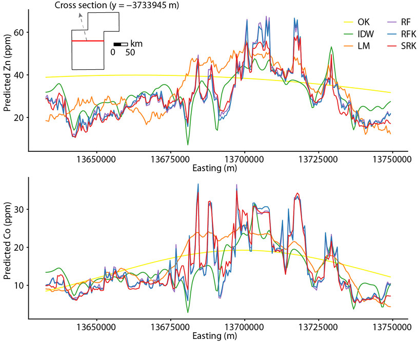
SRK paper Fig. 10 — the six models along one east–west transect at
y = −3,733,945 m. A profile makes visible what a map
flattens: OK is nearly a straight line, and SRK tracks sharper local excursions than
RF or RFK without the overshoot IDW shows.Published reference · SRK Fig. 11
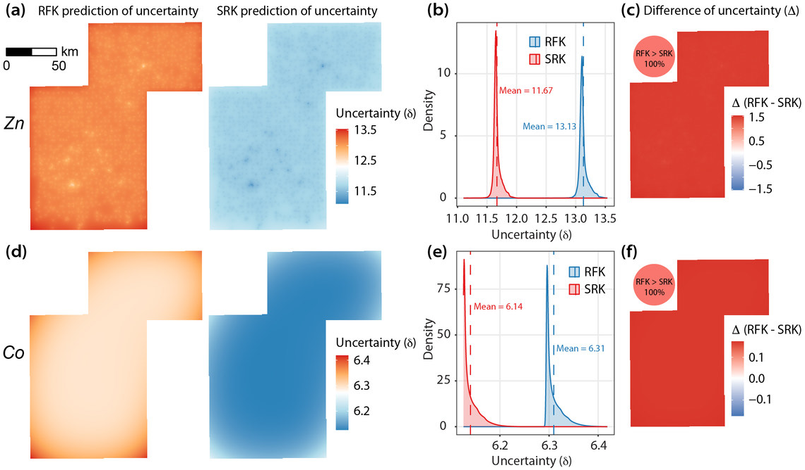
SRK paper Fig. 11 — the kriging standard error δ of Eq. 10
for RFK and SRK, their densities, and the difference
Δ = δRFK − δSRK. Positive
values mean SRK is less uncertain. This is the argument the accuracy table cannot
make: a residual the forest has already flattened gives a variogram with less to
carry, so the kriging variance falls.
↺If you want these maps too
Download raw data/grid_linear.csv from the authors' repository into
data/, evaluate srk_intensity() with the sample points as
reference and the grid as evaluation set (the function is chunked for exactly this),
then call srk_run() once with the grid as test. Budget most
of the time for the 97,234 × 998 neighbourhood search and for the
kriging system; the authors precompute the former into
sv_precomp_*.rda for the same reason.
3.4 Reading the Results Together
Six steps produce one argument, and it is worth stating in the order a reader will
want it.
The mechanism is real and it is visible. Singularity indices built from
lithology proximity vary over an order of magnitude, correlate with cobalt at
r = +0.22 and −0.23, and the forest ranks sv(hm) third of seven
features — above both coordinates, and above the ifi covariate that
sv(ifi) was derived from.
Under controlled conditions the gain is large and behaves as predicted. On
the simulation, +0.096, +0.135 and +0.205 in R2 over ordinary kriging
as the response goes from near-normal to long-tailed. Monotone, as the paper claims.
On real data the gain over kriging is large; over a forest it is
small but consistent. SRK beats OK by +0.21 in R2 and cuts RMSE
by 14 %. Against RFK the margin is +0.018 — small, but positive on every one of
20 forest seeds.
The residual really does get easier to krige. On the full-sample fit,
residual SD falls from 4.90 to 4.72 ppm when the two singularity columns are
added — which is the mechanism the article's Fig. 11 turns into lower kriging
variance.
Nothing here is delicate. Thirty parameter combinations stay within
±5 % of the baseline, and the SD threshold is nowhere near a decision
boundary. The quantity that does need care is the SRK–RFK margin, and step 5
measures it rather than asserting it.
Claim
Where it is tested
Verdict from this run
SRK > OK under non-Gaussianity, margin growing with skew
Step 1, Table 1
reproduced to three decimals
The published covariate set follows from the data
Step 2, Fig. 5
reproduced exactly
The SD filter separates informative from flat features
Step 3, Fig. 6
reproduced; the separation is two orders of magnitude
SRK > OK, IDW and LM under spatial blocking
Step 4, Table 2
reproduced, large margin
SRK > RFK
Steps 4–5
holds on 20/20 forest seeds, by more than the article claims
Insensitivity to the two parameters
Step 6, Fig. 7
reproduced; 30/30 cells inside ±5 %
Lower prediction uncertainty than RFK
article Fig. 11
out of scope here; the residual-SD reduction that drives it is reproduced
3.5 Validation
Rscript run-all.R test runs two suites in about eight seconds.
test-01 checks the implementation against the definitions;
test-02 checks the outputs against the published article and against
the authors' own released fold-level numbers.
== test-01 Method properties =============================================
intensity equals the mean |X| inside the square window pass
vectorised singularity matches the authors' loop pass
a uniform field gives alpha = 2 everywhere pass
alpha equals the fitted log-log slope plus two pass
a field growing away from a source is depleted (alpha > 2) pass
SD filter keeps the varying feature and drops the flat one pass
SRK prediction equals trend plus kriged residual (Eq. 9) pass
a block is never split across folds pass
singularity is computed from covariates, not the response pass
...
18/18 checks passed
== test-02 Reproduction of the published results ========================
Co sample count is the paper's 998 pass
the response is right-skewed, as Sec. 4.1 describes pass
Spearman screen reproduces the published Co covariates pass
imi is screened out, as in Sec. 4.2 pass
lithology singularity SD is above the 0.5 threshold pass
terrain singularity SD is below it pass
sv(hm) is among the three most important SRK features pass
simulated OK matches Table 1 to 0.001 pass
simulated SRK matches Table 1 to 0.005 (forest seed) pass
the SRK margin widens as the distribution departs from normal pass
all 10 deterministic fold results were found pass
IDW and LM reproduce the authors' fold R2 to 1e-6 pass
IDW and LM reproduce the authors' fold RMSE to 1e-5 pass
Co: ordinary kriging is last, as in Table 2 pass
Co keeps SRK ahead of RFK on every forest seed pass
the seed-to-seed spread is smaller than the SRK-RFK gap pass
every parameter combination stays within +/-5% of the baseline pass
...
24/24 checks passed
↺The check that does the most work
test-02 embeds the authors' released fold-level results for the two
benchmarks that contain no random forest — IDW and LM — and requires this pipeline
to match all ten of them to 1e−6. Those two models are pure functions of the
fold assignment and the data, so matching them proves that the 998 samples, the 120
blocks and the five folds built here are the same objects the published analysis
used. Everything else in the comparison then rests on something firmer than "the
numbers look similar".
!The two numbers that do not match, and why
Ordinary kriging matches the authors' released fold-level output exactly on folds
1, 4 and 5, and differs on folds 2 and 3
(R2 0.247 against 0.241, and 0.189 against 0.160). That moves
the OK mean from their 0.145 to 0.152 here, against 0.148 in the article.
automap::autoKrige chooses the residual variogram family automatically,
and on those two folds the choice differs between package versions. The same
mechanism nudges SRK, whose third step is also an autoKrige call. Both
are recorded in env/requirements.md rather than papered over; neither is
large enough to change any ordering in Table 2.
4 Adaptation, Writing & Reproducibility
4.1 Port to Your Domain
SRK needs a point response, covariates observable everywhere, and projected
coordinates. Nothing about it is specific to geochemistry — soil properties, air
pollution, groundwater chemistry, biomass and disease incidence all have the shape it
wants. Four edits to config/project-config.R and the pipeline runs on your
data.
#
Edit
How to choose
1
DATA_SOURCE <- "local", then one CSV per response in data/
Columns x, y, the response, one per covariate. Use a
projected CRS in metres — UTM or an equal-area projection, not Web Mercator
(§2.4).
2
ELEMENTS and CANDIDATE_XVARS
List every covariate you have; step 20 screens them and tells you
which survive at p < 0.05. Start from that set rather than
deciding in advance.
3
SV_SCALES
The single most important choice. The ladder should span the scales your
covariate actually varies over, and every scale needs
MIN_PTS_PER_SCALE samples inside the window — so the smallest
scale is bounded from below by your sampling density. A practical rule: start
the ladder at roughly twice the median nearest-neighbour distance and end it
near a fifth of the study-area extent.
4
CV_BLOCK_SIZE
Large enough that a held-out block is genuinely independent of its
training neighbours — of the order of the variogram range, not smaller. Too
small and you are back to a random split; too large and folds become
unbalanced.
✓The diagnostic to read first
Run steps 20 and 30 and look at results/singularity-diagnostics.csv
before anything else. If every sv_sd comes back near zero, your
covariates are smooth at the scales you chose and SRK has nothing to add over plain
regression kriging — either widen the ladder or find a covariate with genuine local
structure. If n_neutral is large, the ladder is finer than your
sampling design supports and the indices are being imputed rather than estimated.
Both failures are silent in the accuracy table and obvious in that one file.
Design decisions worth making deliberately
Coordinates in the forest or not.RF_USE_COORDS = TRUE
reproduces the published case study; FALSE follows Eq. 5. Leaving
them in lets the forest learn location directly, which competes with the job the
kriging step is there to do — for cobalt the two coordinates take 28 % of the
forest's total importance between them. If your interest is in why the response
varies rather than only in prediction accuracy, run it both ways and report both.
Reference set for the index. Here the reference points are the sample
locations, so the index inherits the sampling design. If your covariate exists as a
raster, evaluating the intensity on the raster instead removes that dependence
entirely and is closer to the theory in Eq. 1–2. That is a real modelling choice,
not a detail.
Anisotropy. Both the article and this pipeline krige isotropically. In a
structurally controlled setting — a fault trend, a prevailing wind, a river network —
fitting an anisotropic variogram to the residual is the obvious next thing to try;
automap will not do it for you.
Back-transformation. The response is modelled on its raw ppm scale, not
logged, even though it is strongly right-skewed. If you log a skewed response,
remember that exponentiating the prediction is biased low, and say what correction you
applied.
4.2 Write the Paper
The article's own structure is the template, and this pipeline produces a table or a
figure for every part of it.
Manuscript section
What to report
From
Data and preprocessing
sample counts, response summary, how categorical covariates became continuous
results/response-summary.csv, data/provenance.md
Variable selection
the Spearman screen, with ρ and p for every candidate, including the ones dropped
tables/table-covariate-screening.tex
Singularity features
the scale ladder, the minimum counts, the SD filter, and what it kept — with the SDs, so the threshold is visibly not arbitrary
feature importance — the sentence that says the singularity column outranks the covariate it came from is the one reviewers remember
results/rf-importance.csv
◆Three sentences that make an SRK paper honest
"Singularity indices were computed from covariates rather than from the
response, so they are defined at unsampled locations and inside held-out
blocks." — this is the methodological point, and it is what distinguishes SRK
from a feature that would leak.
"Cross-validated differences among the forest-based models were compared
against the spread over N random-forest seeds." — with the number. It costs a
loop and it forecloses the most obvious referee objection.
"Coordinates were / were not included in the trend model." — state it.
Two papers running "the same" model with different answers here are not running
the same model.
4.3 Final Reproducibility Package
Artefact
Contents
srk-code-and-data.zip (about 176 KB)
run-all.R, R/, config/,
tests/, plus results/ and tables/ so
every number on this page can be read without running anything
R/02-srk-core.R
the method and the five benchmarks in one file, with the paper's equation
numbers in the comments and every departure marked
DEPARTURE
tests/
18 method-property checks and 24 reproduction checks, including a literal
transcription of the authors' singularity_safe() loop to verify
the vectorised port
env/requirements.md
package list, per-step runtimes, and the one known version sensitivity
data/provenance.md
where the samples come from, what the coordinates are, and what is
deliberately not downloaded
figs/
every figure as 196 dpi PNG and as vector PDF
The data are not in the zip by design. They belong to the GSWA geochemistry database
and Geoscience Australia, they are already published by the article's authors, and a
tutorial should point at the source rather than fork it. R/20-case-data.R
fetches the one table it needs in under a second and records where it came from.
↺Reproduce this page
shell
unzip srk-code-and-data.zip && cd SRK
Rscript -e 'install.packages(c("sp","gstat","automap","ranger"))'
Rscript run-all.R # about 150 s
Rscript run-all.R test # 18 + 24 checks
Every figure on this page tagged Demo run, and every number quoted from
results/, comes out of that. Figures tagged Published reference
are images from the open-access article
(CC BY) and are
reproduced here with attribution.
Sources
Ren K, Song Y, Chen M, Yu Q (2026). A singularity regression
kriging for spatial prediction. GIScience & Remote Sensing 63(1):2690341.
doi:10.1080/15481603.2026.2690341
· local PDF